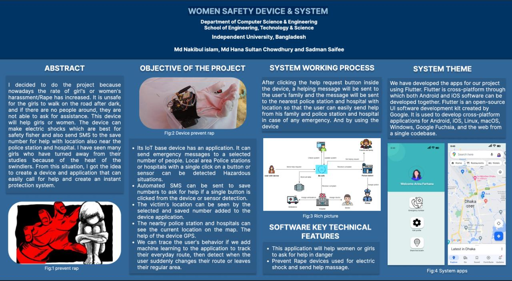
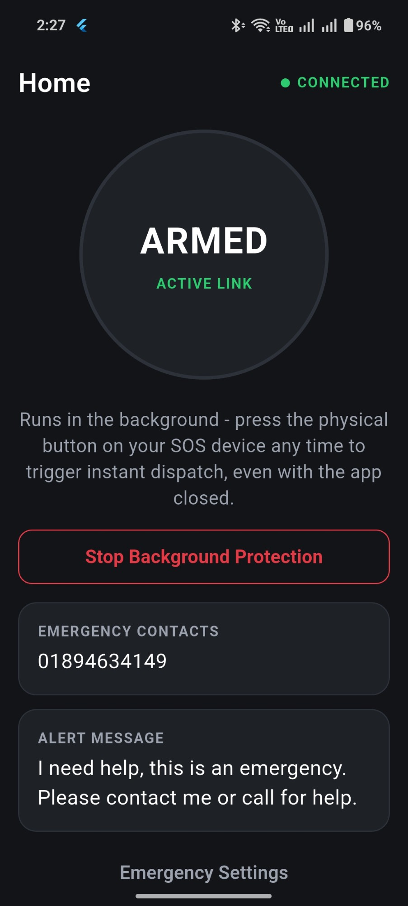
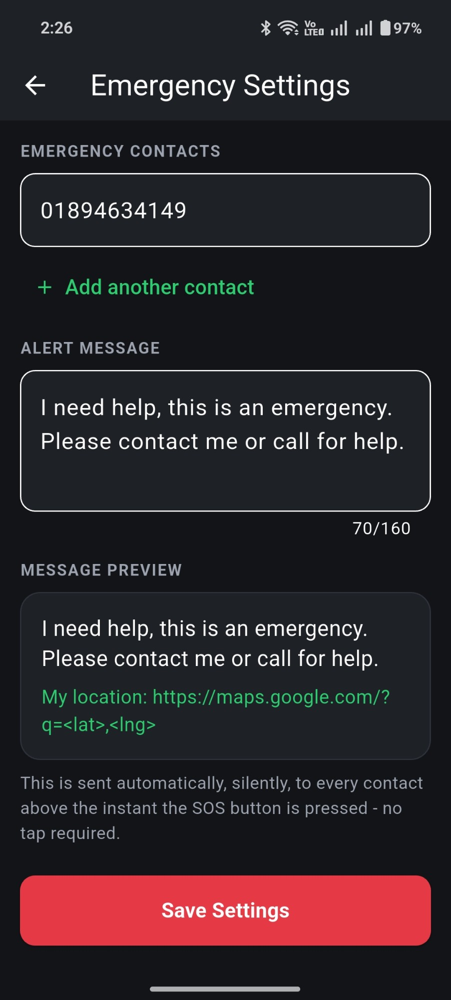

Research & Hardware · Independent University, Bangladesh
Women Safety Device & System
The starting point for this project wasn't a spec sheet, it was a pattern: women being pulled out of school and work because walking home after dark wasn't safe, and having no real way to call for help when it mattered. Working with Md Hana Sultan Chowdhury and Sadman Saifee, I set out to build something a person in that situation could actually use in the moment — not an app they'd have to unlock, navigate, and tap through while someone was already closing the distance.
The first version we built was direct about it: a wearable device with an electric shock mechanism for immediate physical defense, paired with a single button that, when pressed, sent the wearer's real-time GPS location and an emergency message straight to their family, the nearest police station, and the nearest hospital — all three, automatically, from one press. No decision-making required from someone who's already in danger.
The system behind that button had to do more than just fire off a text. Police stations and hospitals get a live location on a map the moment an alert comes in, so response isn't delayed by someone trying to describe where they are over a panicked phone call. The companion app, built in Flutter so the same codebase runs on both Android and iOS, is where a user manages who gets notified and what the emergency message says.
Since the original research prototype, the core idea has kept evolving into a cleaner physical product: a compact SOS button built around an ESP32, a rechargeable LiPo battery, and USB-C charging, small enough to clip onto a bag or keys. The companion app runs quietly in the background and stays armed even when it's closed, so the physical button works instantly whether or not the phone is even unlocked — and the alert it sends out includes a live Google Maps link to the user's exact location, sent silently to every saved contact the second the button is pressed.
The System



